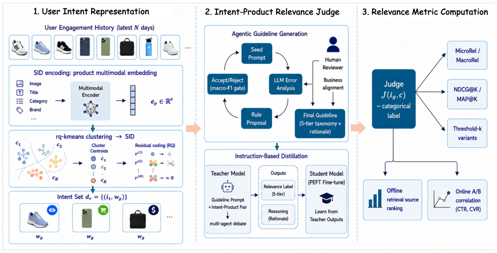

LLM-based User-Product Relevance Evaluation for Dynamic Product Advertising (基于大语言模型的动态商品广告用户-商品相关性评估)
- 会议/期刊: CIKM 2026
- 作者与机构: Wen Zhang, Xiao Bai, Hsiang-wei Chao 等（Snap Inc. 广告/推荐团队）
- 推荐链路定位: 召回（DPA 召回系统的离线评估层）
- 研究方向: 去偏公平、可信隐私与工业架构 / 大语言模型推荐
- 论文原文: https://arxiv.org/abs/2610.14550v1
- 开源代码: 暂未开源
TL;DR (1分钟核心速览)
动态商品广告（DPA）召回长期缺乏可靠离线指标：曝光反馈稀疏且有偏，线上 A/B 又贵又慢。本文提出无查询（query-free）的用户-商品相关性指标：先用 RQ-kmeans 语义 ID（SID）分组 + 事件分层把 30 天行为史压缩成少量加权意图代表（LLM 调用降约 30×），再用「智能体自动发现 + 人工业务对齐」生成五级相关性指南，蒸馏到 Gemini-2.5-Flash 学生模型做规模化打分，最后以阈值 \(k\) 聚合出 MicroRel/MacroRel。在 30 天生产流量上，MicroRel 与线上 CP 的 Pearson 达 \(r=0.97\)，并在 4 组 A/B 中与 CTR/CVR 方向一致。
Background & Motivation (背景与核心矛盾)
- 主流范式: DPA 召回离线评估沿用未来交互召回率、Conversion Precision/Recall（CP/CR）等基于曝光反馈的指标，或依赖昂贵慢速的用户调研。
- 前人局限: ① 曝光策略带来严重选择偏置，点击受展示位与信任效应污染，且长尾低交互请求极稀疏；② 广告域没有搜索那样的显式 query，无法直接套用搜索式相关性判定，从业者难以区分「真正相关」与「短期噪声共现」。
- 核心洞察 (Key Insight): 用户 30 天行为史中大量事件语义冗余，真正驱动线上业务信号的意图集中在少量近期、高意图事件上——因此激进压缩意图集几乎不损失与线上指标的对齐度（Last-1-day 意图集 Spearman 仅 0.53，但 Pearson 与 Full 相差仅 ±0.03–0.06）。
- 本文切入点: 用内容驱动的 LLM 相关性判定替代曝光反馈标签，把「意图推断 + 逐意图打分 + 阈值聚合」做成可解释、可规模化、与线上 KPI 对齐的离线指标。
Method (核心方法设计)
1. 整体框架 (Overall Architecture)
框架分三块：(1) 意图表示——多模态商品 embedding 经 RQ-kmeans 得到分层 SID，按 (SID 前缀, 事件类型) 分组，每组选一个代表商品并赋权，得到紧凑意图集 \(d_u\)；(2) 意图-商品判定——智能体循环自动发现相关性规则，再经人工业务对齐形成五级分类指南，用其提示 Gemini-2.5-Pro 教师标注蒸馏语料，LoRA 微调 Gemini-2.5-Flash 学生作为线上判定器 \(\mathcal{J}\)；(3) 指标计算——逐候选对意图集做加权覆盖，经阈值 \(k\) 二值化后聚合为 MicroRel/MacroRel。整条链路与上游聚合层解耦，同一批判定结果可在不同聚合规则下复用。
flowchart TD
A["用户30天行为史 H_u=(p_t,e_t)"] --> B["RQ-kmeans 分层 SID + (SID,事件) 分组"]
B --> C["加权意图代表集 d_u"]
C --> D["学生判定器 J(i_g,c) 五级相关性"]
D --> E["加权意图覆盖 m_u(c) → 阈值 k 二值化"]
E --> F["MicroRel / MacroRel 聚合"]
G["智能体规则发现 + 人工业务对齐"] --> H["教师 Gemini-2.5-Pro 标注"]
H --> I["LoRA 蒸馏 → 学生 Gemini-2.5-Flash"]
I --> D
2. 关键设计拆解 (Key Designs)
-
SID 分组 + 事件分层的意图压缩：逐事件判定成本过高且偏向「重复曝光同款」的召回算法。对商品 embedding 做 \(L=3\) 级、每级 512 码本的残差量化 \(c_l=\arg\min_k\|r_{l-1}-C_l^{(k)}\|_2,\ r_l=r_{l-1}-C_l^{(c_l)}\)，以 SID 前缀长度控制粒度；同组内取最近商品为代表，权重 $\(w_g=\log(1+|g|)\cdot\beta(e_g),\quad \beta(\text{purchase})=3,\ \beta(\text{cart})=2,\ \beta(\text{other})=1\)$ 对数项让高频同质组占优但不线性膨胀，事件分层防止低意图浏览压过同 SID 的高意图信号——本质是对「重复浏览」这一伪相关做显式正则。
-
智能体规则发现 + 人工业务对齐的双阶段指南：从仅含一句分类指令的种子 prompt 出发，按混淆簇与判定理由聚类，由独立 reasoner 提出子规则，仅当配对 bootstrap 95% CI 排除零且各类 F1 回退 <0.5pp 才接纳，多轮试验只保留复现规则；随后人工审计补上统计上稀有但业务关键的规则（如将人口属性不匹配从 Substitute 提升为硬性 Irrelevant 覆盖）。指南承载了主要增益：无指南的 Pro 教师 P/R 均低约 4%，甚至不如带指南的小模型。
-
教师-学生蒸馏与推理效率：教师 Gemini-2.5-Pro + GPT-5 双 agent 高置信一致即采纳、分歧交人工；蒸馏语料经分层种子采样、三源候选（生产日志/转化信号/高价值广告主）、多模态 hard negative 挖掘（每种子 10 候选）构建。学生用 LoRA（rank 16、lr×2、5 epoch）做五级多标签分类并联合输出属性级理由。损失即标准指令微调交叉熵（标签 + 理由辅助监督），无需负采样；线上仅跑学生，教师只在指南更新/蒸馏刷新时调用。
Experimental Setup & Evaluation Protocol (实验设置与评估协议)
- 数据集与预处理: 生产 DPA 系统 30 天流量；消融用 10K 人工多轮审核共识数据集（GPT-5 与 Gemini-2.5-Pro 独立判定 + 置信度聚合，分歧人工裁决）。
| 数据集 | #Users | #Items | #Interactions | 稀疏度/密度 | 特征/场景说明 |
|---|---|---|---|---|---|
| 生产流量（30天） | 未披露 | 全量商品库 | 每用户数百事件（去重后） | 极稀疏 | 6 路召回源，每请求 top-\(K\)=15 |
| 消融集 | — | — | 10K 标注对 | — | 人工共识 ground truth |
- 数据划分与防穿越 (Splitting Strategy): 按
(date, source)分桶做相关性分析；线上验证用 14 天窗口、10% DPA 流量的 A/B；CP/CR 采用曝光后 1 天归因窗口的 look-back 策略，严格 exact-match。 - 排名评测协议 (Ranking Protocol): 非传统全库排序，而是固定候选集 top-15 的集合级相关性（MicroRel/MacroRel/NDCG@15/MAP@15），并与线上 CP/CR/CTR/CVR 做跨源 Pearson 对齐验证。
- 对比基线与超参设置: 6 路召回源（MF、SU、PBR、CBR、EBR、Rand）作为被评估对象；判定器对比 SigLIP-2-mm 轻量分类器、prompt-only Flash、微调 Flash/Flash-Lite；默认 \(k=7\)、\(L=3\)、码本 512。
Key Experimental Results (实验关键数据)
1. 主实验对比 (Main Results)
各召回源相对 Random 的 log-rel（括号为跨源排名）：
| Src | CP | CR | NDCG@15 | MAP@15 | MicroRel | MacroRel |
|---|---|---|---|---|---|---|
| MF | +3.13 (1) | +0.91 (1) | +0.50 (1) | +0.29 (1) | +1.21 (1) | +1.02 (1) |
| SU | +2.04 (2) | +0.37 (2) | +0.16 (4) | +0.19 (2) | +0.75 (2) | +0.30 (2) |
| PBR | +0.45 (3) | +0.59 (3) | −0.03 (6) | +0.03 (4) | +0.12 (5) | −0.08 (6) |
| CBR | +0.15 (4) | +0.30 (4) | +0.35 (2) | +0.11 (3) | +0.32 (3) | +0.07 (3) |
| EBR | +0.15 (5) | +0.29 (5) | +0.28 (3) | +0.01 (5) | +0.24 (4) | +0.05 (4) |
| Rand | 0.00 (6) | 0.00 (6) | 0.00 (5) | 0.00 (6) | 0.00 (6) | 0.00 (5) |
跨源 Pearson：MicroRel–CP \(r=0.97\)、ImpRel \(r=0.95\)、MacroRel \(r=0.93\)，而 NDCG@15 仅 \(r=0.55\)、MAP@15 \(r=0.94\)。
2. 消融实验 (Ablation Study)
意图集构造（\(k=7\)，Cost 为相对全序列的成对调用占比）：
| 变体 | Cost | Spear. vs Full | P(CVR) | P(CR) | P(CP) |
|---|---|---|---|---|---|
| Full sequence | 100% | 1.000 | 0.24 | 0.19 | 0.32 |
| Random 25% 子采样 | 25% | 0.905 | 0.26 | 0.23 | 0.19 |
| Last 1-day 窗口 | 11% | 0.528 | 0.21 | 0.25 | 0.31 |
| SID only（不分事件） | 3.4% | 0.990 | 0.30 | 0.17 | 0.24 |
| SID + 事件分层（均匀） | 3.4% | 0.991 | 0.29 | 0.18 | 0.26 |
| SID + 事件分层（加权） | 3.4% | 0.989 | 0.50 | 0.29 | 0.35 |
判定器对比（F1）：Pro 无指南 0.816 → 有指南 0.860；SigLIP-2-mm 0.746；Flash 带指南 0.832 → 微调 Flash 0.869（超过教师）；Flash-Lite-ft 0.846。效率：微调 Flash p50 751ms / p95 1117ms / 18 QPS，约为教师（6963ms / 2 QPS）的 9× 加速。
3. 关键实验发现 (Key Findings)
- 压缩几乎无损且更抗噪：SID+事件加权仅用 3.4% 的 LLM 调用即达 0.989 的意图集保真度，且 P(CVR)=0.50 反超全序列（0.24）——去重近重复事件、压低低意图浏览，使指标不再奖励「重复曝光同款」的召回算法，这是全序列指标无法区分的失效模式。
- 指南是增益主来源，而非模型规模：无指南的 Pro 教师 F1 仅 0.816，低于带指南的微调 Flash（0.869）；增益集中在人口属性不匹配、品牌 vs 品类混淆等规则类，说明结构化规则比「更大模型 + 松散 prompt」更关键。
- 阈值 \(k\) 存在明确甜区：\(k\in[5,7]\) 内 P(CP)/P(CR)/P(CVR) 同时达峰（\(k=7\) 时三者 95% bootstrap CI 均严格为正），\(k\ge8\) 后 CP/CR 因候选通过率跌破约 5% 而衰减，印证多意图支持比单弱意图匹配更贴合多触点购买行为。
Highlights, Limitations & Rating (亮点、对比与审稿评价)
- 与代表作对比 (vs. Prior Work): 相比 CP/CR 等曝光反馈指标，本文用内容驱动标签绕开曝光偏置与倾向分数缺失问题（IPS/DR 类方法在召回层常无 propensities 可用）；相比 LREF、BloomIntent 等 LLM 判定工作依赖显式 query 或 Cranfield 式 topic，本文首次在无 query 的 DPA 场景从异构行为史推断意图；相比既有 LLM-judge 仅对齐人工评分，本文直接对齐线上 CTR/CVR 等业务 KPI。
- 可迁移亮点: ① SID 分组 + 事件分层的「意图压缩」可迁移到任意长行为史序列的 LLM 评估/重排场景；② 「智能体规则发现 + 人工业务覆盖」的双阶段指南生成，是低成本构建领域判定标准的通用范式。
- 审稿级局限批判: ① 全部实验基于 Snap 单一生产系统与内部数据，6 路召回源与 10K 消融集不可复现，跨平台泛化性未验证；② 指标依赖商品多模态 embedding 与 SID 码本质量，且 \(k\)、\(L\)、\(\beta\) 等超参在业务分布漂移下需重调；③ 学生模型虽 9× 加速，但 751ms p50 对超大规模离线批量评估仍是瓶颈，且与线上指标的相关性在 engagement-based 召回上明显偏弱（如 MacroRel 仅 +0.019）。
- 四维评分: 创新性 ⭐⭐⭐⭐ | 实验扎实度 ⭐⭐⭐⭐ | 方法清晰度 ⭐⭐⭐⭐⭐ | 落地价值 ⭐⭐⭐⭐⭐